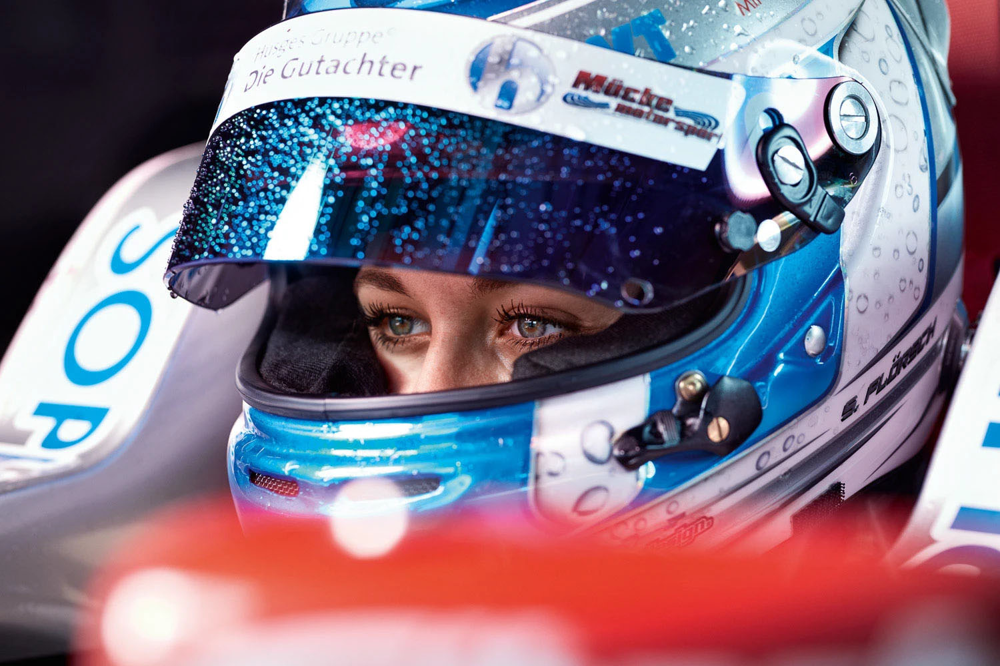

Close the Gap
A digital platform spotlighting how women are reshaping motorsport and why their drive matters.
Discover the StatsWhat you'll learn here
This site brings together insight, research, and real stories — all aimed at highlighting the gender gap in motorsport and what’s being done to close it.
The Gaps
Explore the funding, cultural, media, and entry barriers women face in motorsport.
Explore GapsThe Breakthroughs
From F1 Academy to trailblazing drivers — track the momentum in women’s racing.
See progressWhy it Matters
By shining a light on inequality in motorsport, we aim to inspire action — from grassroots to grand prix. Because when more women take the wheel, the sport wins
"To all the women and girls in motorsport... it seems a good time to remind you, we are here to stay, and we are right where we belong"
Join the Movement
This is more than a website — it’s a growing space for conversation, celebration, and action. Whether you’re a fan or dreaming of pit lane, you’re welcome here.